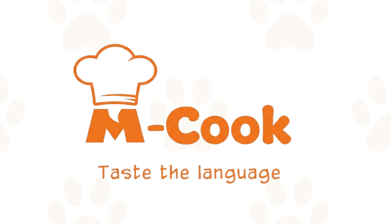
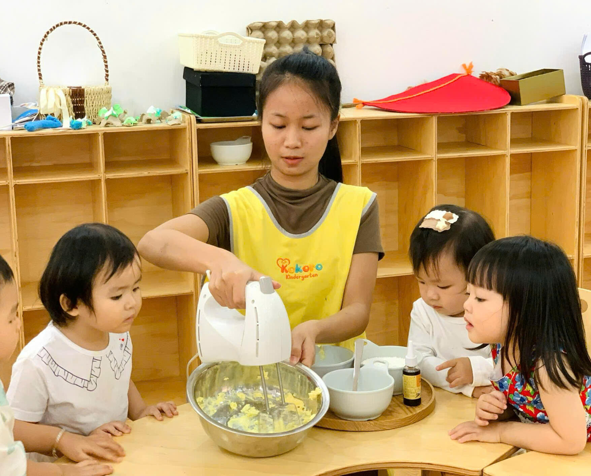
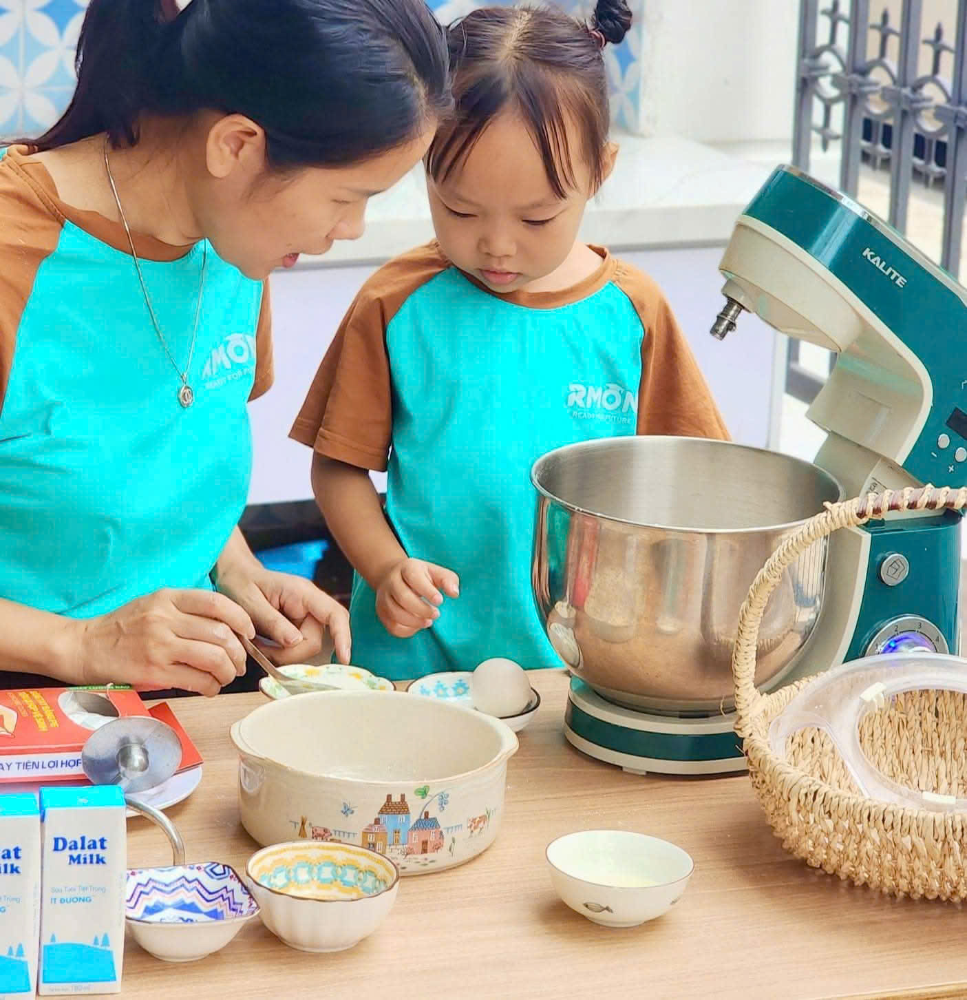
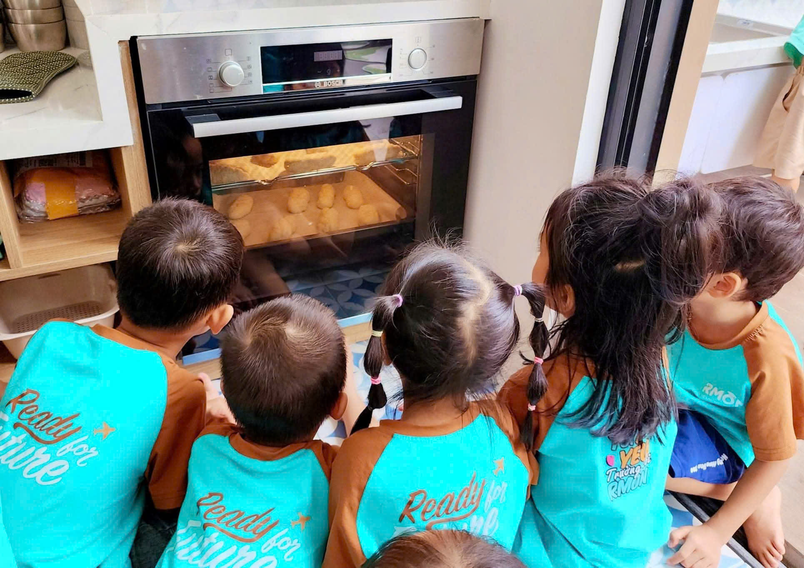

Giáo viên tự xoay xở
Phải tự nghĩ hoạt động và chuẩn bị học liệu.

Đặt lịch trao đổi 30 phútM-Cook thuộc hệ sinh thái M-English
M-Cook giúp trường mầm non đưa tiếng Anh vào những hoạt động thực tế như chuẩn bị nguyên liệu, làm theo hướng dẫn, trao đổi và hoàn thành một sản phẩm.
Dành cho trường mầm non tư thục, song ngữ và quốc tế đang tìm một chương trình tiếng Anh giàu trải nghiệm, có cấu trúc và có thể triển khai thực tế.
Đặt lịch trao đổi 30 phútCùng xem M-Cook có phù hợp với độ tuổi, đội ngũ và điều kiện triển khai của trường bạn không.

Nghe hiểu · Làm theo · Tương tác · Tự lậpKhoảnh khắc nhận ra vấn đề
Một hoạt động trải nghiệm có thể khiến trẻ hào hứng trong một buổi. Nhưng để tạo thành giá trị giáo dục lâu dài, nhà trường còn cần một lộ trình, công cụ và cách triển khai nhất quán.
Phải tự nghĩ hoạt động và chuẩn bị học liệu.
Trẻ vui nhưng chưa có nhiều cơ hội sử dụng ngôn ngữ.
Mỗi lớp phụ thuộc vào năng lực từng giáo viên.
Nhà trường khó kết nối chương trình với phụ huynh.
Kết quả hướng tới
Trẻ nghe, hiểu, làm theo hướng dẫn và tương tác.
Trẻ quan sát, lựa chọn, thao tác và hoàn thành nhiệm vụ.
Có chương trình, học liệu, đào tạo và hỗ trợ chuyên môn.
Kết nối tiếng Anh, kỹ năng sống và hoạt động thực tế.


Cơ chế khác biệt
Hoạt động nấu ăn tạo ra một bối cảnh cụ thể để trẻ nghe, hiểu, hành động và sử dụng tiếng Anh có ý nghĩa.
Offer
M-Cook không chỉ cung cấp ý tưởng hoạt động. Nhà trường nhận được các thành phần cần thiết để chuẩn bị, đào tạo và triển khai chương trình.
Trao đổi phạm vi triển khaiQuy trình
Độ tuổi, số lớp, đội ngũ, không gian và mục tiêu.
Làm rõ mô hình và nguồn lực cần chuẩn bị.
Chương trình, học liệu và đội ngũ.
Phương pháp và cách dẫn dắt trẻ.
Đồng hành, quan sát và phản hồi.
Proof
M-Cook thuộc hệ sinh thái M-English, với tài liệu mô tả chương trình và phương pháp, khung phát triển 5 lĩnh vực, vai trò giáo viên cùng cấu trúc chương trình, học liệu, đào tạo và đồng hành chuyên môn.
M-Cook được thiết kế để hỗ trợ trẻ sử dụng tiếng Anh trong ngữ cảnh thực tế và phát triển kỹ năng sống. Kết quả cụ thể cần được đánh giá theo phạm vi và điều kiện triển khai của từng trường.
FAQ
Không. Nấu ăn là bối cảnh để trẻ nghe, hiểu, tương tác và phát triển kỹ năng sống. M-Cook bao gồm chương trình, học liệu, đào tạo giáo viên và đồng hành chuyên môn.
M-Cook dành cho trẻ từ 3–9 tuổi. Lộ trình và cách tổ chức cụ thể cần được trao đổi theo nhóm tuổi và điều kiện của từng trường.
Không. Hệ thống bao gồm giáo án, học liệu, giáo cụ, đào tạo và hướng dẫn triển khai.
Nhà trường cần phối hợp về lớp học, giáo viên, không gian, thời khóa biểu và phụ huynh.
Chi phí, số buổi, thời lượng, quy mô lớp và phạm vi hỗ trợ sẽ được trao đổi theo nhu cầu thực tế.
Đăng ký trọn gói M-Cook
Điền thông tin của trường. Sau khi gửi, hệ thống sẽ tạo mã đăng ký và hiển thị QR chuyển khoản riêng cho hồ sơ của bạn.
Mã đăng ký:
Số tiền: 10.000.000 VNĐ
Sau khi chuyển khoản, hệ thống sẽ tự xác nhận khi SePay nhận được giao dịch.
Đang chờ thanh toán…
Thông tin của bạn chỉ được sử dụng để liên hệ và xác nhận đăng ký M-Cook.